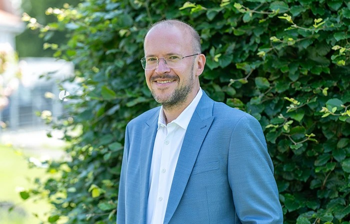
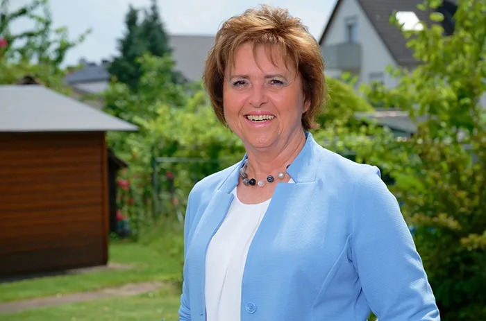

Team Kümmel
Lernen Sie uns kennen.
Hinter Kümmel Bestattungen steht ein Team, das harmonisch miteinander arbeitet und teilweise seit vielen Jahren aufeinander eingespielt ist. Wir sind Ihre Ansprechpartner, Zuhörer, Begleiter und Berater · zum Weinen und zum Lachen.
Familie Kümmel
In sechster Generation für Gießen da.
Sascha Kümmel führt den Familienbetrieb · Maria Kümmel verbindet als Bestatterin Mitmenschlichkeit, Organisationstalent und kaufmännisches Wissen.


Wir sind erreichbar
Sie erreichen immer einen von uns.
Auch nachts, an Wochenenden und Feiertagen · Sie sprechen direkt mit uns, nicht mit einer Bandansage.
0641 516 55